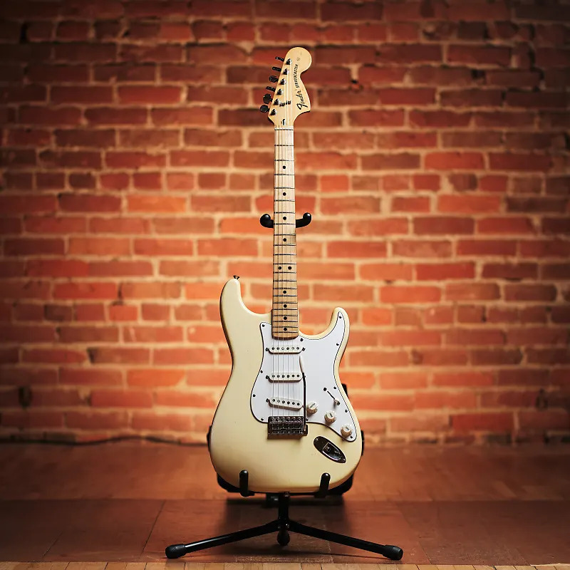
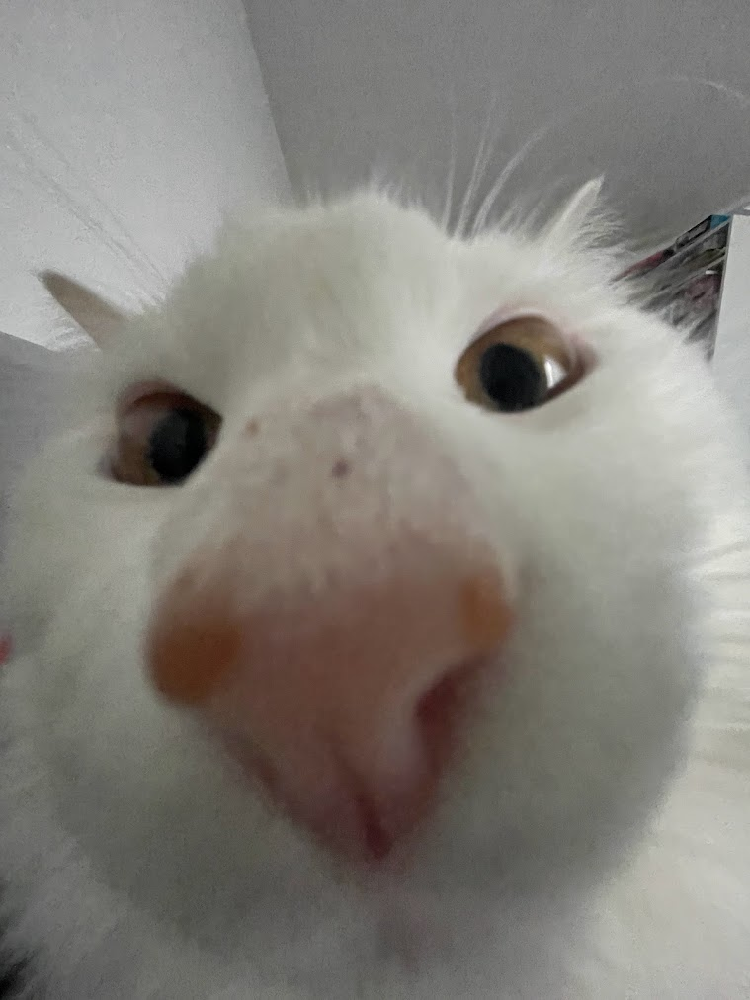

Outre ma passion pour la programmation, je m'intéresse beaucoup à l'astronomie depuis que je suis petit. J'ai trouvé très fascinant de construire des machines que nous envoyons dans l'espace. J'aime découvrir la façon dont nous observons les autres planètes et comment nous utilisons la technologie pour réaliser ces études.
L'image de droite est une Fender Stratocaster. Les Stratocasters sont mes modèles de guitares électriques préférés car j'aime leur forme et le son qu'elles produisent. J'ai découvert ma passion pour cette guitare et les guitares en général, en janvier 2022 et ma famille m'a dit que j'aurais ma toute première guitare si j'obtenais une bonne note au Bac de Français. Environ six mois plus tard, en juillet 2022, j'ai reçu ma toute première guitare, ma Squier Stratocaster, qui est un modèle moins cher de Fender Stratocaster, et depuis, j'apprends à jouer de la guitare moi même.
La musique fait partie de ma vie depuis très longtemps puisque mon frère et moi avons commencé à jouer au piano quand nous étions petits. Par conséquent, j'ai toujours gardé la musique dans ma vie car c'est aussi l'une de mes plus grandes passions après la programmation et l'ingénierie logicielle et matérielle. J'ai alors commencé à détourner ma culture musicale en écoutant divers genres et en apprenant à jouer d'autres instruments que mon instrument principal, comme le violon, le ukulélé et la batterie.
A part ça, j'adore les animaux. J'ai un chat depuis que je suis tout petit et maintenant nous avons adopté un deuxième chat, celui que vous voyez à droite. C'est une créature très intéressante. Il fait beaucoup de choses intéressantes, comme mâcher mon ampli de guitare, s'asseoir sur mon ordinateur portable quand je travaille sur quelque chose, jeter par terre des objets qui se trouvent sur mon bureau et me mordre chaque fois qu'il veut de l'attention.
